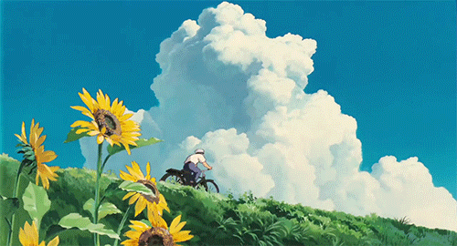
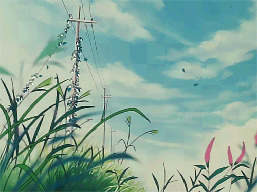

☀️ Energia Solar
O Sol que Alimenta a Lavoura
Os painéis solares em fazendas são perfeitos para bombear água, iluminar estufas e cercas elétricas. Além de reduzir a conta de luz, ajudam o produtor a ser autossuficiente!

🍃 Biogás
Transformando Resíduos em Força
No agro, nada se perde! Dejetos de animais e restos de colheitas passam por biodigestores e viram gás e energia elétrica. É a economia circular funcionando de um jeito lindo e limpo.

💨 Energia Eólica
O Vento que Move a Produção
Grandes aerogeradores dividem o espaço com pastagens e plantações sem atrapalhar. O vento gera eletricidade para as fazendas e o excedente ainda pode ser vendido para a rede!